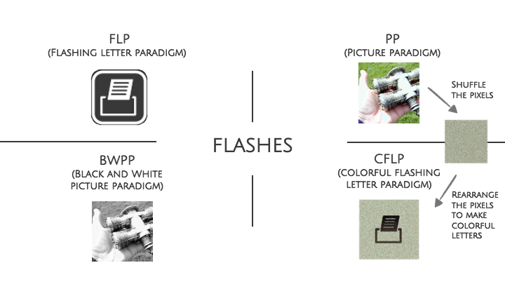

The research explores the possible mechanism that makes picture flashes produce a higher accuracy compared with b/w letter flashes. The hypothesis is color - the picture paradigm speller produces better performance because the flashes are colorful. The current result shows that pictures (no matter colorful or b/w) can produce a higher accuracy than letters (no matter colorful or b/w).
What is a P300 Speller?
A P300 speller implement typing by thinking through detecting the p300 signal. The speller catch the letter at the intersection of the row and column that have the highest p300 signals.
Picture flashes: https://www.youtube.com/watch?v=FmSKfg4SZq0&ab_channel=gtecmedicalengineering
Letter flashes: https://www.youtube.com/watch?v=XIr2cRKFolY&t=144s&ab_channel=MikeChi
Motivation
-
Previous research
Picture- based speller produces a larger amplitude difference in some ERP components and higher accuracy in typing performance than the traditional letter speller. -
My hypothesis
Picture paradigm speller produces better performance because the flashes are colorful.
Research Goal and Question
-
Goal: Understanding the possible mechanism that makes picture flashes produce a higher accuracy compared with b/w letter flashes.
-
Question: Is the difference caused by the color of the picture?
Four experimental contitions
Expected result
The accuracy of the CFLP and PP is going to be significantly higher than that of the BWPP and FLP.
Participants
Gender: 2 male, 4 female
Age: 20~30
Procedure
- Calibration phase
-
- calibrate a five-character word
- pares, chino, presa, hinco - Typing-by-thinking phase
-
- Keep trying until successfully type the 3 letters “UNI”
- Stop after typing 12 letters
- Silently count as the target letter flashes

Four measurements of accuracy
Results
- One-way ANOVA
-
- No statistically significant difference
- Reasonable because there are only 6 samples - PP and BWPP have the highest accuracy
- - the pattern of the data does not support my hypothesis - the two picture paradigms got the highest accuracy, no matter the pictures are colorful or not
- CFLP has the lowest accuracy

Limitations
- Participants
- - In this experiment, only 6 participants are recruited. There might be a clearer result if more data are collected
- EEG data
- - In the research of Fernandez-Rodriguez et al., they found some differences in the ERP amplitude difference across different conditions. Therefore, there might be more to discover if the EEG data are collected as well.
- GEL
- Considering the convenience of the participants, I did not use the gel in this experiment. As a result, the accuracy of the spelling task decrease, and the match of the shape of the scalp with the BCI becomes a confounding factor.
- The contrast of the flashes
- One of the confounding factors might be that the shuffled picture (CFLP) does not seem as colorful as the original picture (PP). Moreover, the contrast of the letters in the CFLP conditions seems to be lower than the FLP conditions.
- Location
- The location of this experiment is not fixed. Though I’d tried to find a quiet place for every participant, the difference in the environmental noise of every location is still hard to control, and the electromagnetic wave, which could influence the BCI signal, in different locations might be an artifact as well.
- Attention
- From the graph below and the results of the quick interview I did for every participant after the experiment, I feel like the task requires high concentration, and hence the performance is largely depending on the mental status of the participant at that time. For example, the performance might decline if the participants feel tired and hard to concentrate. By adding more trials to the experiment, the attentive effect might be eliminated.
- Practice effect
- It can be seen from the graph below that there is an obvious practice effect in this experiment. Overall, Participants performed better as they do more practice and reached the peak at the third trial. Same as the attentive effect, the practice effect might be eliminated by adding more trials.
Conclusion
The result of this study shows that pictures (no matter colorful or b/w) can produce a higher accuracy than letters (no matter colorful or b/w). However, further study is required to make a more accurate conclusion.
References
-
A Review on Brain-Computer Interface (BCI) Spellers: P300 Speller http://bbrc.in/bbrc/a-review-on-brain-computer-interface-bci-spellers-p300-speller/
-
Dan-Glauser, E. S., & Scherer, K. R. (2011). The Geneva affective picture database (GAPED): a new 730-picture database focusing on valence and normative significance. Behavior research methods, 43(2), 468-477. https://link.springer.com/article/10.3758/s13428-011-0064-1
-
Fernández-Rodríguez, Á., Velasco-Álvarez, F., Medina-Juliá, M. T., & Ron-Angevin, R. (2019). Evaluation of emotional and neutral pictures as flashing stimuli using a P300 brain–computer interface speller. Journal of neural engineering, 16(5), 056024. https://iopscience.iop.org/article/10.1088/1741-2552/ab386d
-
Krusienski, D. J., Sellers, E. W., McFarland, D. J., Vaughan, T. M., & Wolpaw, J. R. (2008). Toward enhanced P300 speller performance. Journal of neuroscience methods, 167(1), 15-21. https://www.ncbi.nlm.nih.gov/pmc/articles/PMC2349091/
-
Kim, M., Kim, J., Heo, D., Choi, Y., Lee, T., & Kim, S. P. (2021). Effects of Emotional Stimulations on the Online Operation of a P300-Based Brain–Computer Interface. Frontiers in human neuroscience, 15, 87. https://www.frontiersin.org/articles/10.3389/fnhum.2021.612777/full
-
Li, Q., Lu, Z., Gao, N., & Yang, J. (2019). Optimizing the performance of the visual P300-speller through active mental tasks based on color distinction and modulation of task difficulty. Frontiers in human neuroscience, 13, 130. https://www.frontiersin.org/articles/10.3389/fnhum.2019.00130/full
-
Onishi, A., & Nakagawa, S. (2019). How does the degree of valence influence affective auditory P300-based BCIs?. Frontiers in neuroscience, 13, 45. https://www.frontiersin.org/articles/10.3389/fnins.2019.00045/full